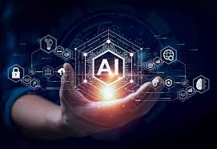

La inteligencia artificial es un campo de la ciencia relacionado con la creaci�n de computadoras y maquinas que pueden razonar, aprender y actuar de una manera que normalmente requerir�a inteligencia humana o que involucra datos cuya escala excede lo que los humanos pueden analizar.

La IA es un campo amplio que incluye muchas disciplinas, como la inform�tica, el an�lisis y la estad�stica de datos, la ingenier�a de hardware y software, la ling��stica, la neurociencia y hasta la filosof�a y la psicolog�a.
A nivel operativo para el uso empresarial, la IA es un conjunto de tecnolog�as que
se basan principalmente en el aprendizaje autom�tico y el aprendizaje profundo, que
se usan para el an�lisis de datos, la generaci�n de predicciones y previsiones, la
categorizaci�n de objetos, el procesamiento de lenguaje natural, las recomendaciones,
la recuperaci�n inteligente de datos y mucho m�s.
�C�mo funciona la IA?